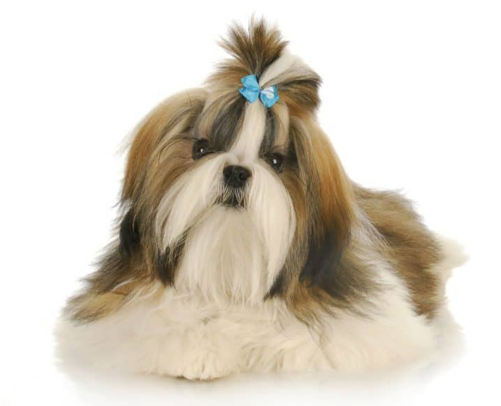

Thor

Thor é um cachorro brincalhão e está procurando uma família que possa cuidar dele.
Conheça alguns animais que estão procurando um lar.
Thor é um cachorro brincalhão e está procurando uma família que possa cuidar dele.

Luna é uma gata tranquila e carinhosa que procura um novo lar.

Luna é uma cachorrinha carinhosa e cheia de amor para dar, esperando por uma família que possa oferecer a ela um lar seguro, cheio de carinho e felicidade.

Simba é um gatinho carinhoso, brincalhão e cheio de personalidade, esperando por uma família que lhe dê muito amor, cuidado e um lar cheio de carinho.
| Nome | Animal | Idade | Personalidade |
|---|---|---|---|
| Thor | Cachorro | 2 anos | Brincalhão |
| Luna | Gato | 1 ano | Carinhosa |
| Mel | Cachorro | 3 anos | Calma |
| Simba | Gato | 2 anos | Brincalhão |
A adoção de um animal é uma responsabilidade. É necessário pensar nos gastos, no espaço disponível e no tempo que será necessário para cuidar do animal.
Preencher formulário de interesse